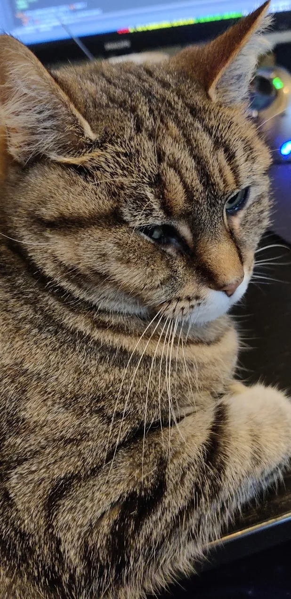

Home
EVE Online: Ninja Hacking Guide
Gallery
CV
Projects
Links
Gallery
These are the remnants of what used to be my Instagram feed.
2024-10-05: I was helping with a Red Cross training course in search and rescue.

2024-10-05: I was helping with a Red Cross training course in search and rescue.
2021-06-26: I was drinking a glass of Coca-Cola and a dog toy in the summer heat.
2019-03-08: The night before I was to meet the woman who would later become my partner in life, I prepared one of her favorites snacks: Jaffa cakes. Six years later, I can safely say it was a good idea.